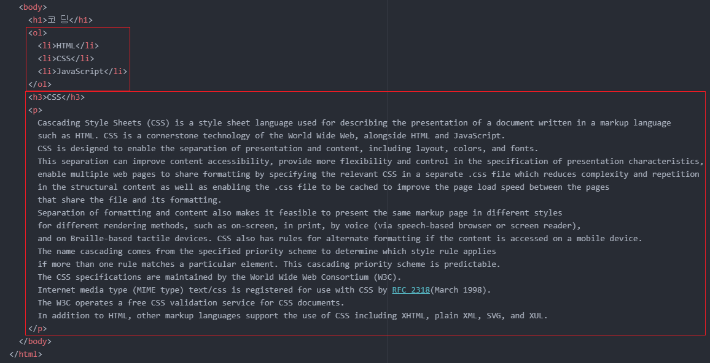
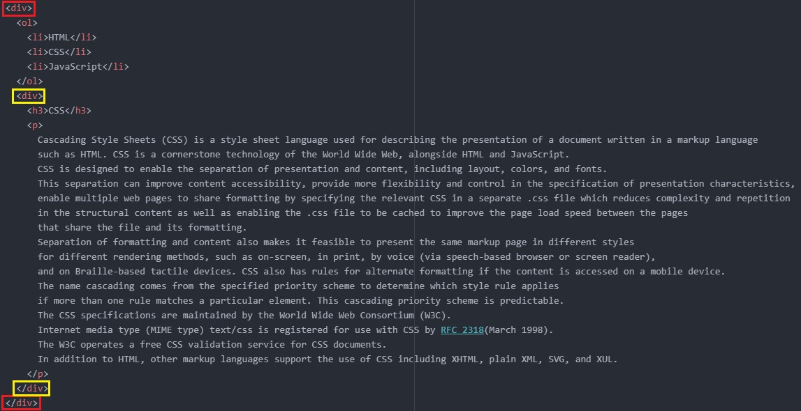
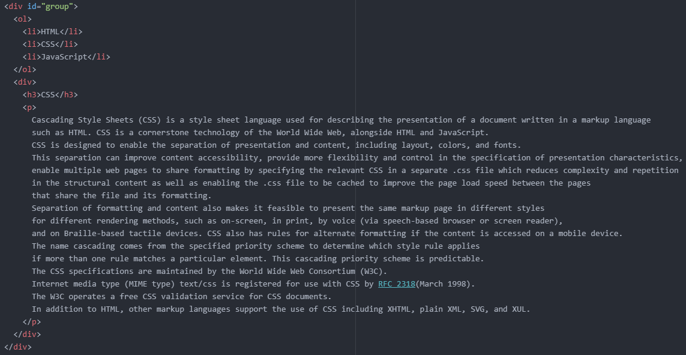
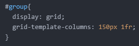

- 웹 페이지를 좀 더 웹 페이지답게 꾸미기: 그리드 이용
오늘은 13일에 예고했던 대로 페이지의 우측 공간을 채워보겠습니다.
이때 필요한 기능이 바로 '그리드'입니다.
우선, 양옆에 배치시고자 하는 두 영역을 하나의 그룹으로 묶어줘야 합니다.

그 두 영역은 바로 위 그림과 같죠.
그런데 보시다시피, 'h3' 태그, 'p' 태그는 엄연히 다른 종류의 태그인데 저걸 어떻게 하나로 묶나 싶습니다.
이때 필요한 태그가 'div' 태그입니다.
'div' 태그는 아무런 의미가 없습니다.
오로지 디자인을 위해 사용하는 태그입니다.
어쨌든 이 태그를 이용해 다음과 같이 코드를 작성해 줍니다.

노란색 상자부터 보겠습니다.
'div' 태그를 적용하여 'h3' 태그와 'p' 태그를 하나의 그룹으로 묶어줍니다.
이후 새로운 'div' 태그(빨간색 상자)를 적용하여 'ol' 태그와 이미 존재하고 있는 'div' 태그(노란색 상자)를 하나의 그룹으로 묶어줍니다.
그리고 두 태그를 모두 포함하는 'div' 태그(빨간색 상자)에 'id' 속성과 이에 대한 속성값을 적용시켜줍니다.
저는 다음과 같이 작성했습니다.

'id' 속성을 사용했으니 'style' 태그에는 id 선택자를 적용시켜줍니다.
그리고 여기서 그리드 기능을 이용할 것입니다.
다음과 같이 코드를 작성합니다.

display 속성은 요소를 화면에 어떻게 출력할 것이냐를 정할 수 있도록 해줍니다.
따라서 요소를 화면에 그리드 방식으로 출력하겠다는 뜻입니다.
그리고 grid-template-columns 속성은 각각의 열의 길이를 지정할 수 있도록 해주는 동시에, 그룹 내 태그의 배열 순서대로 첫 번째 열부터 배정시켜줍니다.
즉, 첫 번째 열을 150px로 하는 동시에 'ol' 태그로 둘러싼 영역을 첫 번째 열에 배정시켜주고, 두 번째 열은 1fr로 하는 동시에 'div' 태그로 둘러싼 영역을 두 번째 열에 배정시켜줍니다.
여기서 fr은 fraction의 약자로 지정한 숫자에 해당하는 비율로 열의 길이를 지정하겠다는 뜻입니다.
예를 들어 화면의 총 가로 길이가 1000px이라 할 때, 첫 번째 열을 1fr, 두 번째 열은 1fr로 설정하면 첫 번째 열을 500px로, 두 번째 열을 500px로 지정하게 됩니다.
결론적으로 다음과 같은 결과가 나오게 됩니다.
그리고 박스 모델과 검사 기능을 이용하여 깔끔하게 다듬어주면 됩니다.
그 결과물은 다음과 같습니다.
삽입된 페이지에 마우스 우클릭 후 '페이지 소스 보기'를 통해 해당 페이지 전체 코드를 볼 수 있습니다.이제야 웹 페이지의 느낌이 물씬 나네요.
오늘은 여기까지 하겠습니다.
그럼 내일도 화이팅!